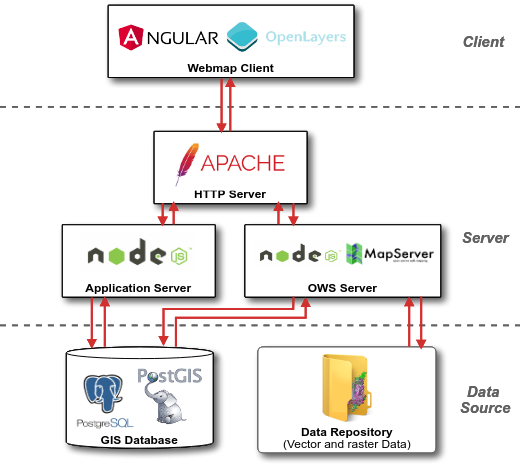

Arquitetura de software
O Cerrado DPAT foi desenvolvido de acordo com os padrões de interoperabilidade definidos pela Open Geospatial Consortium (OGC) e a arquitetura de webservices com o padrão REST.
Componentes de software
A arquitetura de software desenvolvida para o Cerrado DPAT pode ser observada na Figura abaixo.

Essencialmente, pode-se dividir o Cerrado DPAT em três partes:
- Client: responsável por apresentar toda a interface, construído em Angular 8 com apoio dos frameworks:
- WebMap: Mapa interativo construído com o OpenLayers
- Componentes front-end: Bootstrap 4, Material e PrimeNG.
- Server: Disponibiliza os serviços que compõem a aplicação:
- Application Server: Disponibiliza o acesso aos dados do Data Source, análises e configurações.
- OWS Server: Disponibiliza o acesso ao MapServer, responsável pelo processamento dos dados geográficos, apresentação visual dos mesmos e gerenciamento de cache das imagens geradas.
- Data Source: Responsável por armazenar os dados vetoriais e matriciais.
Resumidamente, todos os dados usados pelo Cerrado DPAT estão organizados em um banco de dados PostgreSQL e em sistemas de arquivos (Data Repository). O PostgreSQL utiliza a extensão PostGIS que permite processar consultas espaciais via Structured Query Language (SQL). Já os dados que não necessitam de cruzamentos espaciais são armazenados em arquivos nos formatos Shapefile e/ou GeoTIFF.
Estes dados são acessados pelo Application Server e pelo OWS Server (ambos construídos em NodeJS) e são disponibilizados através de URLs com requisições por meio do protocolo HTTP. Todas as requisições Web realizadas aos Servers são interceptadas pelo Apache Server e devidamente redirecionadas. Desta forma, o Client realiza todas as requisições necessárias para construir a visualização dos elementos da página, tais como: mapa interativo, gráficos, campo de busca e etc.
Por fim, destaca-se que todo o código-fonte para o Cerrado DPAT e também para o OWS Server foi disponibilizado publicamente no Github do LAPIG/UFG.